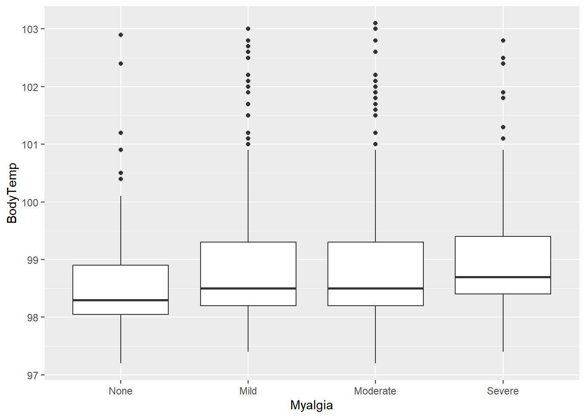

Fitting a linear model to the continuous outcome (Body temperature) using only the main predictor of interest.
Fitting another linear model to the continuous outcome using all (important) predictors of interest.
Comparing the model results for the model with just the main predictor and all predictors.
Fitting a logistic model to the categorical outcome (Nausea) using only the main predictor of interest.
Fitting another logistic model to the categorical outcome using all (important) predictors of interest.
Compares the model results for the categorical model with just the main predictor and all predictors.
Linear Model: Body Temperature vs. Myalgia
#plot suspect interactionggplot(data,aes(x = Myalgia, y = BodyTemp)) +geom_boxplot()

lm_mod <-linear_reg() #note the default is lm(), thus we do not need to "set" the computational enginelm_fit1 <- lm_mod %>%fit(BodyTemp ~ Myalgia, data = data)tidy(lm_fit1) #several significant results
#plot suspect interactionggplot(data, aes(x = Myalgia, y = Nausea)) +geom_count()
glm_mod <-logistic_reg(mode ="classification",engine ="glm",penalty =NULL,mixture =NULL) #define mode so it is a glmglm_fit1 <- glm_mod %>%fit(Nausea ~ Myalgia, data = data)tidy(glm_fit1) #several significant results
Warning: Model matrix is rank deficient. Parameters `WeaknessYNYes, CoughYN2Yes,
MyalgiaYNYes` were not estimable.
glance(glm_fit1) %>% dplyr::select( AIC, BIC)
# A tibble: 1 × 2
AIC BIC
<dbl> <dbl>
1 920. 939.
glance(glm_fit_all1) %>% dplyr::select( AIC, BIC) #better fit
# A tibble: 1 × 2
AIC BIC
<dbl> <dbl>
1 821. 982.
compare_performance(glm_fit1,glm_fit_all1)
Warning in predict.lm(object, newdata, se.fit, scale = 1, type = if (type == :
prediction from a rank-deficient fit may be misleading
Warning in predict.lm(object, newdata, se.fit, scale = 1, type = if (type == :
prediction from a rank-deficient fit may be misleading
Warning in predict.lm(object, newdata, se.fit, scale = 1, type = if (type == :
prediction from a rank-deficient fit may be misleading
Warning in predict.lm(object, newdata, se.fit, scale = 1, type = if (type == :
prediction from a rank-deficient fit may be misleading